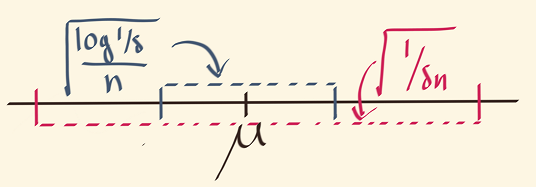
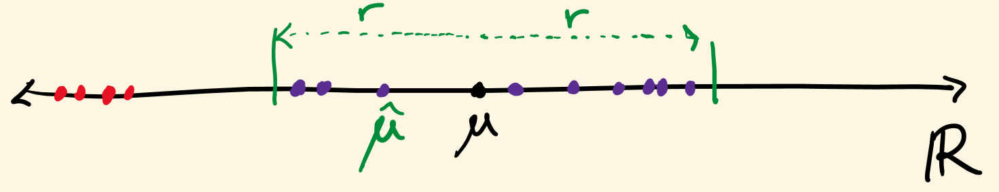
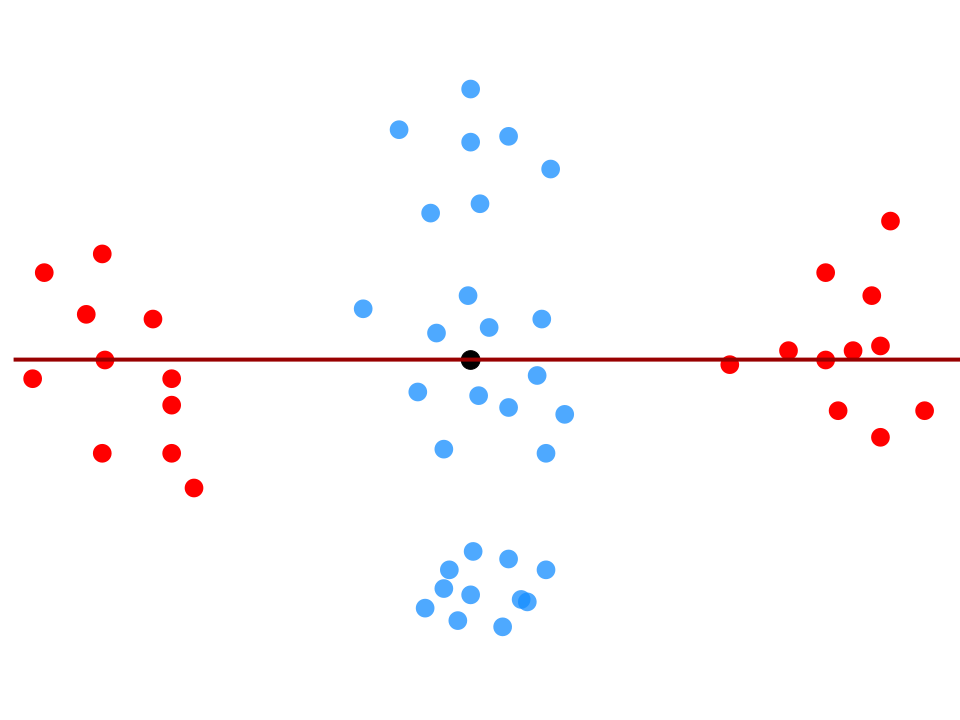

Sub-Gaussian Mean Estimation in Polynomial Time
(loading loading loading – advance slide)
\(\newcommand{\R}{\mathbb{R}}\) \(\newcommand{\e}{\varepsilon}\) \(\newcommand{\cD}{\mathcal{D}}\) \(\newcommand{\poly}{\text{poly}}\) \(\newcommand{\cN}{\mathcal{N}}\) \(\newcommand{\tensor}{\otimes}\) \(\newcommand{\E}{\mathop{\mathbb{E}}}\) \(\renewcommand{\hat}{\widehat}\) \(\newcommand{\iprod}[1]{\langle #1 \rangle}\) \(\newcommand{\pE}{\tilde{\mathbb{E}}}\) \(\newcommand{\Paren}[1]{\left ( #1 \right )}\) \(\newcommand{\N}{\mathbb{N}}\) \(\newcommand{\Tr}{\text{Tr}}\)
mean estimation with sub-gaussian rates in polynomial time
sam hopkins (miller fellow, uc berkeley)
estimating the mean of a random vector
observe: \(X_1,\ldots,X_n \in \R^d\) independent copies of \(X\)
goal: estimate \(\mu = \E X\)
assume isotropic: \(\E (X - \mu)(X - \mu)^\top = I\) (this talk)
goal: strong nonasymptotic guarantees, weak assumptions on \(X\), polynomial time
estimating the mean of a random vector
observe: \(X_1,\ldots,X_n \in \R^d\) independent copies of \(X\)
goal: estimate \(\mu = \E X\)
empirical mean: \(\overline{\mu} = \tfrac 1 n \sum X_i\)
mean square error: \(\E \| \overline{\mu} - \mu \|^2 = \frac 1 n \E \|X - \mu\|^2 = \frac d n\)
what about confidence intervals? (c.i.) i.e. \(\Pr( \| \overline{\mu} - \mu \| > t )\)?
\(\Pr(| \overline{\mu} - \mu | > t) \leq \delta\) implies \(\delta\)-c.i. of width \(t\)
nonasymptotics for the empirical mean
first, \(d=1\). how small is \(\Pr(| \overline{\mu} - \mu | > t)\)?
\[\underbrace{X \sim \cN(\mu,1)}_{\text{strong (gaussian) assumption}} \Rightarrow \underbrace{\Pr( |\overline{\mu} - \mu| > t ) \leq \exp(-t^2 n)}_{\text{thin (gaussian) tail}}\]
\[\underbrace{X \text{ has } \E (X - \mu)^2 \leq 1}_{\text{weak (2nd moment) assumption}} \Rightarrow \underbrace{\Pr (| \overline{\mu} - \mu| > t) \leq \frac 1 {t^2 n}}_{\text{fat tail}}\]

heavy tails
only assume \(\E X, \E X^2\) are finite.
data could be gaussian
but it could be corrupted, heavy-tailed, or maybe you just don’t know
beyond the empirical mean (\(d=1\))
recall: i.i.d. samples \(X_1,\ldots,X_n\) of \(X\), try to estimate \(\mu = \E X\)
how confident can you be? is there an estimator \(\hat{\mu}\) with \(\Pr( |\hat{\mu} - \mu| > t ) \leq \exp(-\Omega(t^2 n))\) when \(X\) is heavy-tailed?
no. but you can fake it!
theorem (old):
for every \(t\), exists \(\hat{\mu}_t\) such that \(\Pr( | \hat{\mu}_t - \mu | > t ) \leq \exp(-\Omega(t^2 n))\)
and \(\hat{\mu}_t\) is poly-time computable
can estimate \(\mu\) as if \(X\) were Gaussian, even if only \(\E X, \E X^2\) exist
what happens for \(d > 1\)?
tail of the empirical mean, high dimensions
same story, now with added curse of dimensionality
gaussian case:
\(X \sim \cN(\mu, I) \Rightarrow \Pr( \|\overline{\mu} - \mu\| > t + \underbrace{\sqrt{d/n}}_{\approx \E \|\overline{\mu} - \mu \| } ) \leq \underbrace{\exp(-t^2 n)}_{d\text{-independent subgaussian tail}}\)
heavy-tailed case:
covariance \(I \Rightarrow \Pr( \|\overline{\mu} - \mu\| > t ) \leq \underbrace{\frac d {t^2 n}}_{d\text{-dependent fat tail}}\)
beyond the empirical mean, high dimensions
\(X \sim \cN(\mu, I) \Rightarrow \Pr( \|\overline{\mu} - \mu\| > t + \underbrace{\sqrt{d/n}}_{\approx \E \|\overline{\mu} - \mu \| } ) \leq \underbrace{\exp(-t^2 n)}_{d\text{-independent subgaussian tail}}\)
theorem (lugosi-mendelson, 2018):
for every \(t\), exists \(\hat{\mu}_t\) such that
\[\Pr \left ( \| \hat{\mu}_t - \mu \| > O \left (t + \sqrt{d/n} \right ) \right )\leq \exp(-t^2 n)\]
assuming only \(\E(X-\mu)(X-\mu)^\top = I\).
new combinatorial notion of high-dimensional median, appears to require \(\exp(d)\) time
theorem (this work): same, but \(\hat{\mu}_t\) is computable in time \(O(dn) + (dt)^{O(1)}\)
prior work
covariance \(I\), \(n\) samples
(disclaimer: “tail” not strictly accurate because one estimator \(\hat{\mu}_t\) for each \(t\))
| estimator | dim. | tail | time | ref. |
|---|---|---|---|---|
| empirical mean | any | \(d/t^2 n\) | poly | folklore |
| (many) | \(1\) | \(\exp(-t^2 n)\) | poly | (many) |
| geometric median | any | \(\exp(-t^2 n /d)\) | poly | [Minsker 13, Hsu-Sabato 13] |
| tournament median | any | \(\exp(-t^2 n)\) | exp | [Lugosi-Mendelson 18] |
| median-sdp | any | \(\exp(-t^2 n)\) | poly | this work |
main theorem
theorem: given \(X_1,\ldots,X_n,\delta\), can find \(\hat{\mu}\) such that
\[ \Pr \left ( \left \| \hat{\mu} - \mu \right \| > C \left ( \sqrt{\frac{d}{n}} + \sqrt{\frac{\log(1/\delta)}{n}} \right ) \right ) \leq \delta \, , \]
in time \(O(nd) + (d \log(1/\delta))^{O(1)}\)
main innovation: new semidefinite programming (sdp) algorithm for high-dimensional median, based on sum of squares method (sos).
sos familiarity is not a prerequisite for this talk.
agenda
- the \(d=1\) case: median of means
- lugosi and mendelson’s median
- median-sdp
median of means in one dimension
[nemirovsky-yudin, jerrum-valiant-vazirani, alon-matias-szegedy]
\(X_1,\ldots,X_n\) i.i.d. copies of \(X\) with \(\E X = \mu\) and \(\E (X - \mu)^2 = 1\)
goal: construct \(\hat{\mu}_\delta\) with
\[ \Pr \Paren{\|\mu - \hat{\mu}_\delta \| \gg \sqrt{\frac{\log(1/\delta)}{n}} } \leq \delta \]


key insight: number of outliers concentrates even when sum of outliers does not.
analysis

\(Z_1,\ldots,Z_{\log(1/\delta)}\) are bucketed averages, \(\E Z = \mu\) and \(\E(Z - \mu)^2 = \tfrac {\log(1/\delta)} n\)
\(\Pr(|Z_i - \mu| \gg \sqrt{\log(1/\delta)/n}) \leq 0.01\) by Chebyshev
\(2/3\) of \(Z_i\)’s have \(|Z_i - \mu| \ll \sqrt{\log(1/\delta)/n}\) w.p. \(1-2^{-\log(1/\delta)} = 1-\delta\) by Chernoff
\(|\text{median}\{Z_i\} - \mu| \ll \sqrt{\log(1/\delta)/n}\) w.p. \(1-\delta\).
median of means in higher dimensions – first attempt
recall gaussian case:
\(X \sim \cN(\mu, I) \Rightarrow \Pr( \|\overline{\mu} - \mu\| > t + \sqrt{d/n} ) \leq \exp(-t^2 n)\)
i.e. \(\delta\)-c.i. radius \(O\Paren{\sqrt{\frac dn} + \sqrt{\frac {\log 1/\delta} n}}\)
goal: match this, only assume \(\E (X - \mu)(X - \mu) = I\)

median of means in higher dimensions – first attempt
recall gaussian case:
\(X \sim \cN(\mu, I) \Rightarrow \Pr( \|\overline{\mu} - \mu\| > t + \sqrt{d/n} ) \leq \exp(-t^2 n)\)
i.e. \(\delta\)-c.i. radius \(O\Paren{\sqrt{\frac dn} + \sqrt{\frac {\log 1/\delta} n}}\)
goal: match this, only assume \(\E (X - \mu)(X - \mu) = I\)
problem: can have \(\|Z_i - \mu\| \approx \sqrt{\log(1/\delta) d/n}\) for most \(Z_i\)
result: dimension-dependent tail \(\exp(-t^2 n / d)\)
i.e. \(\delta\)-c.i. radius \(O\Paren{\sqrt{\frac{ d \log(1/\delta)}{n}}}\)
lugosi and mendelson’s median
cannot ask for \(2/3\) of \(Z_i\)’s to be non-outliers
instead, ask for every direction to have at most \(1/3\) outliers!



lugosi and mendelson’s estimator
input: \(X_1,\ldots,X_n,\delta\)
buckets: bucketed means \(Z_1,\ldots,Z_k\) for \(k = \log(1/\delta)\)
centrality: \(x\) is \(r\)-central if in all directions \(u\), for at least \(2/3\) of \(Z_i\),
\(|\iprod{Z_i,u} - \iprod{x,u}| \leq r\)
implication: \(x\) is \(r\)-central implies \(x\) has dist. at most \(r\) to a median in every direction
lemmas for lugosi-mendelson estimator
remember: \(X_1,\ldots,X_n\) samples in \(k = \Theta( \log(1/\delta))\) buckets, \(Z_i\) is mean in \(i\)-th bucket.
lemma 1: If \(r \gg \sqrt{d / n} + \sqrt{\log(1/\delta) / n}\) then w.p. \(1-\delta\), \(\mu\) is \(r\)-central
lemma 2: any two \(r\)-central \(x,y\) also have \(\|x - y\| \leq 2r\)
lemmas for lugosi-mendelson estimator
remember: \(X_1,\ldots,X_n\) samples in \(\log(1/\delta)\) buckets, \(Z_i\) is mean in \(i\)-th bucket.
lemma 1: If \(r \gg \sqrt{d / n} + \sqrt{\log(1/\delta) / n}\) then w.p. \(1-\delta\), \(\mu\) is \(r\)-central
lemma 2: any two \(r\)-central \(x,y\) also have \(\|x - y\| \leq 2r\)
algorithm: output any \(r\)-central \(x\)
running time????
median sdp
(almost) a convex (sdp) relaxation of the set of \(r\)-central \(x\)’s
with enough constraints that each step of the lugosi-mendelson analysis also applies to the sdp (the heart of the “proofs to algorithms” SoS method)
\(\text{poly}(d,\log(1/\delta))\) constraints enough to capture all important properties of integral solutions.
\[ \{ x \, : \, \text{ for all $u$, at most $1/3$ of the $Z_i$'s have $|\iprod{Z_i,u} - \iprod{x,u}| > r$} \} \]
how would you know if you found a central \(x\)?
algorithmic lemma 1: if \(r \gg \sqrt{d / n} + \sqrt{\log(1/\delta) / n}\) w.p. \(1-\delta\) there is a certificate \(M_\mu\)
which proves that for every unit vector \(u \in \R^d\)
exist at most \(1/3\) of the \(Z_i\)’s s.t. \(|\iprod{Z_i, u} - \iprod{\mu,u}| > r\).
algorithmic lemma 2: there is a polynomial-time algorithm which finds \(x\) such that \(\|x - y\| \leq 2r\) if \(y\) has a certificate \(M_y\).
\[ \{ (x,M_x) \, : \, \text{ $M_x$ proves for all $u$, at most $1/3$ of the $Z_i$'s have $|\iprod{Z_i,u} - \iprod{x,u}| > r$} \} \]
certifying centrality
change of notation: \(Z\) has mean \(\mu\) and covariance \(I\) (\(X\) has disappeared)
(if \(Z_1,\ldots,Z_k\) are bucketed means of \(X_1,\ldots,X_n\) and \(k = \log(1/\delta)\), recover previous setting.)
problem: given \(Z_1,\ldots,Z_k,r\) and \(x\), certify that for all unit \(u\), at most \(k/3\) \(Z_i\)’s have \(\iprod{Z_i,u} - \iprod{x,u} > r\).
what is certification?
algorithm takes \(Z_1,\ldots,Z_k,r,x\), outputs “yes” or “I don’t know”
output is yes \(\rightarrow\) \(x\) is \(r\)-central
goal: certification succeeds w.p. at least \(1 - \exp(-k/10)\) when \(r \gg \sqrt{d / k} + 1\) and \(x = \mu\)

the centrality sdp
start with a quadratic program in \(b = b_1,\ldots,b_k, u = u_1,\ldots,u_d\):
\[\max_{u,b} \sum b_i \text{ such that } b_i^2 = b_i, \|u\|^2 = 1, \text{ and } b_i \iprod{Z_i,u} \geq b_i (\iprod{x,u} + r)\]
relax \((b,u)(b,u)^\top\) to block PSD matrix
\[\left ( \begin{array}{cc} B & W \\ W^\top & U \end{array} \right ) \]
\[\begin{align} SDP(Z_1,\ldots,Z_k,\mu) = & \max \, \text{Tr} B \text{ such that} \\ & B_{ii} \leq 1 \\ & \Tr U = 1 \\ & \iprod{Z_i, W_i} \geq \iprod{x, W_i} + r B_{ii} \end{align}\]
glimpse of the analysis
goal: if \(r \gg \sqrt{d / k} + 1\) then w.p. \(1-e^{-k/10}\),
\[SDP(Z_1,\ldots Z_k, \mu) \leq k/3\]
then dual solution is a (degree \(2\) sos) proof \(M_\mu\)
expectation: \(\E SDP(Z_1,\ldots,Z_k,\mu) \leq k/6\)
proof step 1: relate \(SDP(Z_1,\ldots,Z_k,\mu)\) to \(2 \rightarrow 1\) norm of a random matrix
proof step 2: Grothendieck’s inequality for sdp approximation of \(2 \rightarrow 1\) norm
concentration: \(\Pr ( SDP(Z_1,\ldots,Z_k,\mu) - \E SDP(Z_1,\ldots,Z_k,\mu) > k/6 ) < e^{-k/10}\)
proof sketch: \(SDP(Z_1,\ldots,Z_k,\mu)\) satisfies a bounded differences property – pays at most \(1\) per outlier.
proof insights
sdp and robust matrix norms:
usual norms of \(Z_1,\ldots,Z_k\) sdps are bad, e.g. \(\left \| \sum_{i =1}^k Z_i Z_i^\top \right \| = \|(Z_1,\ldots,Z_k)^\top\|_{2 \rightarrow 2}^2\)
sdps can handle less outlier-sensitive norms, e.g. \(\| (Z_1,\ldots,Z_k)^\top \|_{2 \rightarrow 1}\)
sdps and stability:
unlike norms and averages, sdp can move by $ 1$ even if \(Z_i\) moves by \(10^{10}\).
sdps can concentrate better than norms and averages
algorithmic lemma 1: If \(r \gg \sqrt{d / n} + \sqrt{\log(1/\delta) / n}\) w.p. \(1-\delta\) there is a certificate \(M_\mu\)
which proves that for every unit vector \(u \in \R^d\)
exist at most \(k/3\) \(Z_i\)’s s.t. \(|\iprod{Z_i,u} - \iprod{\mu,u}| > r\)
algorithmic lemma 2: there is a polynomial-time algorithm which finds \(x\) such that \(\|x - y\| \leq 2r\) if \(y\) has a certificate \(M_y\).
prove in degree 8 SoS that \((x,M_x), (y,M_y)\) must have \(\|x-y\| \leq 2r\), get an algorithm for free.
or, use gradient descent! [Cherapanamjeri, Flammarion, Bartlett ’19]
conclusion
main theorem: first polynomial-time estimator for heavy-tailed estimation matching empirical mean’s performance in Gaussian setting
üå∂ üå∂ news: running time already improved to \((\text{input size})^4\) by Cherapanamjeri, Flammarion, Bartlett ‚Äì how low can you go?
üå∂ üå∂ üå∂ news: running time already improved to \((\text{input size})^2\) by Depersin, Lecue ‚Äì how low can you go???
üå∂ üå∂ üå∂ üå∂ news: new paper with Cherapanamjeri, Kathuria, Raghavendra, Tripuraneni with improved but not optimal results for linear regression and covariance estimation. can you get optimal rates in poly time?
practical consequences?: is there a practical algorithm whose empirical performance improves on state-of-the-art for heavy-tailed estimation?
thanks!
Confidence Intervals

Confidence Intervals / Non-Asymptotics: Gaussians
If \(X_1,\ldots,X_n \sim \cN(\mu, \Sigma)\) then \(\overline{\mu} = \frac 1 n \sum_{i=1}^n X_i \sim \cN(\mu, \Sigma / n)\)
\(\delta\) confidence interval radius: \(\sqrt{\frac{\Tr \Sigma}{n}} + \sqrt{\frac{2 \|\Sigma\| \log(1/\delta)}{n}}\)
Consider \(\Sigma = I, \mu = 0\)
\(\overline{\mu} \sim \cN(0, I/n)\), so \(\|\overline{\mu}\|^2 = \sum_{i=1}^d g_i^2 \approx \frac{d \pm \sqrt{d \log (1/\delta)}}{n}\) norm of std. Gaus.
\(\|\overline{\mu}\| = \sqrt{\sum_{i=1}^d g_i^2} \approx \sqrt{\frac d n } \cdot \Paren{1 \pm \frac {\sqrt{\log 1/\delta}} {\sqrt d}} = \sqrt{\frac dn} + \sqrt{\frac{1 \cdot \log(1/\delta)}{n}}\)
Heavy Tails
Only assume \(\mu = \E X\) and \(\Sigma = \E(X - \mu)(X - \mu)^\top\) are finite.
Heavy tails do occur in high dimensions: corruptions, power laws in large networks, etc.
Heavy Tails and the Empirical Mean
\(\Tr \Sigma = \E \|X - \mu\|^2\) and \(\|\Sigma\|=\) magnitude of principal component.
Sub-Gaussian \(X\)
\[r_\delta = \sqrt{\frac{\Tr \Sigma}{n}} + \sqrt{\frac{2 \|\Sigma\| \log(1/\delta)}{n}}\]
\(1/\sqrt{n}\) rate, \(\sqrt{\log 1/\delta}\) tail bound, \(\sqrt{\log 1/\delta}\) multiplies \(\sqrt{\|\Sigma\|}\)
Heavy-tailed \(X\)
\[ r_\delta = \sqrt{\frac{\Tr \Sigma}{n \delta}} \]
\(1/\sqrt{n}\) rate
\(\sqrt{1/\delta}\) tail bound crisis of confidence
\(\sqrt{1/\delta}\) multiplies \(\sqrt{\Tr \Sigma}\) curse of dimensionality
For which r.v.’s \(X\) can \(\E X\) be estimated with sub-Gaussian-like confidence intervals?
Only need bounded 2nd moments! [Lugosi-Mendelson 18]
But if \(X \in \R^d\), it takes \(\exp(d)\) time to compute
For which r.v.’s \(X\) is there a polynomial-time computable and sub-Gaussian estimator?
This work: only need bounded 2nd moments!
Main Theorem
Theorem: Given \(X_1,\ldots,X_n,\delta\), can find \(\hat{\mu}\) such that
\[ \Pr \left \{ \left \| \hat{\mu} - \mu \right \| > C \left ( \sqrt{\frac{\Tr \Sigma}{n}} + \sqrt{\frac{\|\Sigma\| \log(1/\delta)}{n}} \right ) \right \} \leq \delta \, . \]
in time \(O(nd) + (d \log(1/\delta))^{O(1)}\).